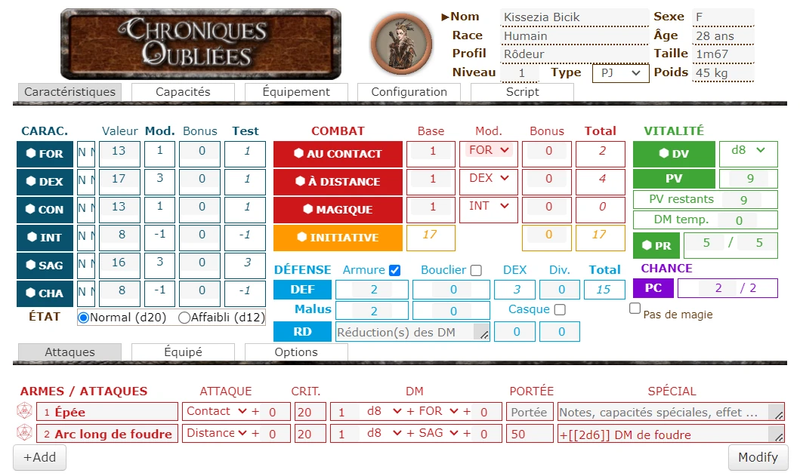
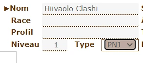
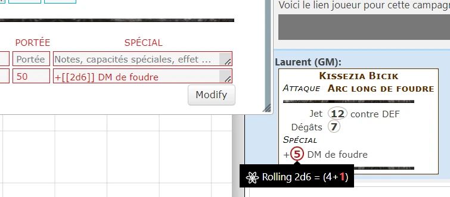
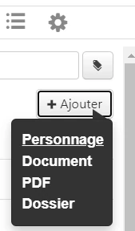
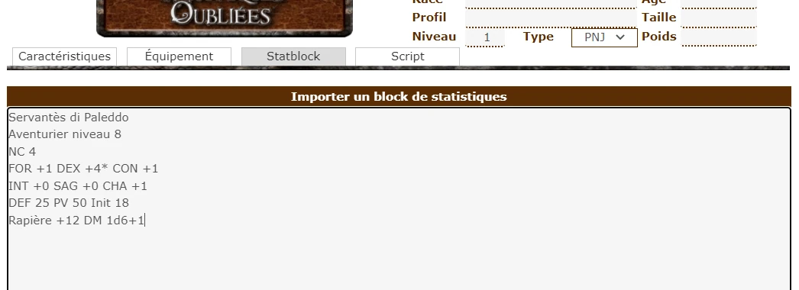
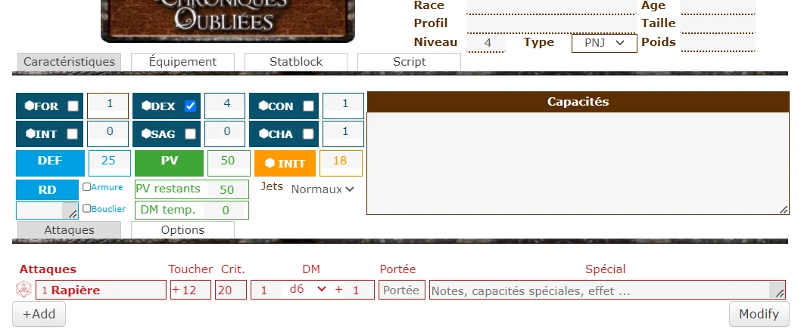
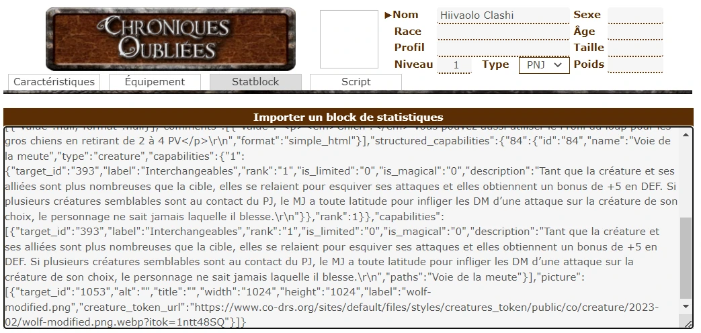
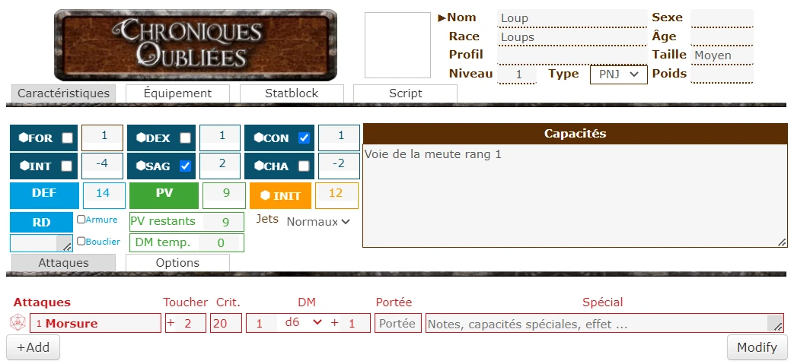

Cette feuille de personnage utilise des marques déposées et des droits d’auteurs qui sont la propriété de Black Book Editions comme l’y autorisent les conditions d’utilisation de Black Book Editions. Cette feuille de personnage n’est pas publiée par Black Book Editions et n’a pas reçu son aval ni une quelconque approbation de sa part. Pour de plus amples informations sur Black Book Editions, consultez www.black-book-editions.fr.

Cette fiche a été originellement conçue par Natha. Elle a été reprise par Ulti en 2018, et le design a peu changé. Vous pouvez voir ci-contre la fiche de Natha. Le développement de la fiche est entièrement libre et n'est en aucun cas un produit officiel de Black Book Édition. Il est nécessaire d'acheter le jeu Chroniques Oubliées pour profiter pleinement de cette fiche.
La première partie de la fiche concerne l'identité du personnage (nom, race, profil, niveau, etc.) et reste toujours visible. La partie située en dessous de l'identité comporte plusieurs onglets qui regroupent différents aspects de la fiche.
D'une manière générale, cliquer sur les symboles de dés permet de lancer les dés dans le chat pour l'action liée aux dés. Les symboles de triangle pleins indiquent qu'il est possible d'afficher plus d'informations en cliquant sur le triangle. Mettre la souris à la fin de certaines lignes permet de faire apparaître un symbole d'engrenage. Cliquer sur ce symbole d'engrenage dévoile des lignes supplémentaires, généralement utiles uniquement pour le MJ.
La fiche est conçue à la fois pour être utilisable seule et avec un compte gratuit, et pour faciliter l'utilisation du script COFantasy pour ceux qui ont un compte pro.
Cette partie affiche le token du personnage et les informations de base sur le personnage. La seule subtilité concerne le nom : on peut cliquer sur le triangle devant le nom, pour faire apparaître un alias. En face du nom, on voit alors apparaître la façon dont les joueurs connaissent le personnage : soit par son nom, soit par son alias. Ces informations sont en particulier utilisées par le script associé à la fiche.
Le jeu fait une distinction nette entre personnages joueurs et PNJ : la construction est différente, les caractéristiques sont simplifiées pour les PNJs. Le choix du type de fiche se fait dans l'identité, depuis le menu déroulant Type.

Si vous avez commencé à remplir la fiche en mode joueur et que vous décidez de passer en mode PNJ, la fiche essaie de convertir automatiquement tout ce qui a été rentré en mode joueur. De même, vous pouvez repasser en mode joueur, et la conversion sera faite automatiquement. Si vous passez par erreur de PJ à PNJ, rien ne devrait être perdu, vous pouvez repasser à PJ.
Il existe une différence entre PNJ et PJ qui n'est pas directement visible sur la fiche : les personnages joueurs on un niveau et les PNJ ont un niveau de créature (NC). Les règles précisent que partout où le niveau est mentionné dans une capacité, on doit utiliser le NC pour un PNJ. On utilise donc le niveau tout court pour noter le NC d'un PNJ, et ce malgré le fait qu'un personnage joueur est considéré comme ayant un niveau de monstre égal à la moitié de son niveau. Le passage de PJ à PNJ ne fait pas cette conversion.
La fiche est découpée et zones de couleur regroupant les caractéristiques de base, le combat, la vitalité, la défense et les parties de règles optionnelles.
Pour chaque caractéristique de base, la fiche calcule le modificateur de caractéristique et propose un bouton pour lancer un dé auquel on ajoute ce modificateur. Par défaut, ce jet est un dé à 20 faces, mais si l'état affaibli est coché, ce sera un d12. Entre le bouton de lancer de dé et la valeur de la caractéristique, un menu déroulant permet de choisir entre caractéristique ordinaire, caractéristique supérieure (dans ce cas, le bouton fait lancer 2 dés et garde le meilleur) et caractéristique héroïque supérieure (où le résultat du dé est toujours au moins 10).
Les lignes d'attaque sont précédées d'un symbole de dé à 20 faces. Cliquer sur ce dé permet de lancer le jet d'attaque, ainsi que les dégâts de l'arme.

Tout ce qui est dans le champ SPÉCIAL sera interprété avant affichage (comme un message dans le chat). Par exemple, on peut y mettre affaibli pendant [[1d4]] tours, ou bien +[[2d6]] DM de feu.
En mettant la souris vers la fin de la ligne, on fait apparaître une roue crantée. Cliquer sur cette roue fait apparaître plus d'informations pour l'attaque. La plupart ne sont utiles qu'avec le script associé, mais le champ Liste de modificateurs permet de modifier les attaques, par exemple pour faire relancer les 1 des dés de dégâts. Passer la souris sur ce champ indique la liste des modificateurs reconnus par la fiche (le script en reconnaît beaucoup plus). Certaines armes sont reconnues par la fiche quand on rentre leur nom, ce qui permet d'avoir automatiquement certains modificateurs, comme choc pour le bâton, qui permet de faire des dégâts non létaux sans pénalité.
Au dessus de la liste des attaques, un onglet permet d'afficher des options d'attaques qui s'appliquent à toutes les attaques. L'effet de chaque case à cocher est expliqué sur la fiche. Pour l'attaque en puissance, on peut modifier le nombre de d6 de DM supplémentaires, comme prévu dans la règle page 161.
Cet onglet affiche par défaut 5 voies normales et une voie de prestige pour le personnage. On peut remplir directement les noms de voies et les titres des capacités. Les triangles à côté de ces noms permettent d'afficher la description des capacités, ou, pour les voies, des effets valides pour l'ensemble de la voie (comme le bonus de +2/rang en connaissance pour la Voie de la magie universelle). Pour éditer ces descriptions, il faut cocher la case Éditer en haut à droite des capacités. Pour retrouver un affichage plus compact, il faut décocher la case. Il est possible d'afficher 3 voies supplémentaires en cochant la case Plus de voies en dessous des capacités.
Il est possible d'envoyer dans le tchat le texte descriptif d'une capacité en cliquant sur la bulle de dialogue qui se trouve à droite du nom de la capacité.
Cet onglet propose aussi une liste de compétences à remplir (cliquer sur Add). Chaque capacité a par défaut une caractéristique associée (mais on peut la changer le temps d'un test), ainsi qu'un malus possible à appliquer : malus d'armure ou malus de casque (pour les jets de perception ou de vigilance).
Enfin, la dernière liste est une liste de jets de capacité, pour noter les jets utiles pour certaines capacités. Le format est assez libre, pour qu'on puisse faire des jets de dégâts, des jets de caractéristiques, avec ou sans avantage. On peut par exemple y noter le jet d'esquive de la magie d'un voleur.
L'onglet équipement permet à la fois de noter la richesse, des consommables et des notes de jeu. Pour les consommables, il est possible d'afficher une ligne supplémentaire pour décrire l'effet (utilisé par le script).
L'onglet de configuration devrait être peu touché. D'ailleurs, la valeur par défaut de ces options peut être changée dans chaque partie Roll20, dans les réglages de la partie (accessibles avant de lancer la partie). Le setting (soit générique, soit Terres d'Arran) permet de définir de grandes options de jeu. Le type de jet permet, pour cette fiche, de faire lancer les dés publiquement (Jets Normaux) ou bien seulement visibles par le MJ (Jets Cachés).
Le fiche de PNJ comporte un onglet de caractéristiques simplifié, et des onglets équipement et script similaires aux onglet équipement et onglet script en mode joueur. Un onglet particuler, l'onglet Statblock permet de créer facilement des fiches de PNJ depuis les livres ou ressources sur COF :
Il existe 2 moyens d'importer directement un PNJ, sans qu'il soit besoin de compte pro. Les 2 méthodes utilisent l'onglet Statblock de la fiche en mode PNJ. Enfin, il existe un troisième moyen plus complet, mais celui-ci utilise un script et demande un compte pro.
C'est l'importation la plus facile depuis les livres des règles ou les campagnes du commerce : il suffit de copier le stat block et de le coller dans l'onglet Statblock. Attention, cet onglet n'est visible que quand la fiche est en mode PNJ. Les étapes sont donc :
 créer un personnage dans Roll20, ouvrir la fiche,
passer la fiche en mode PNJ, puis cliquer sur l'onglet Statblock, puis coller dans cet onglet le texte de la statblock.

En changeant à nouveau d'onglet, la fiche va se remplir automatiquement.

À noter que la fiche ne lit le statblock qu'après une modification du texte. Donc, une fois que vous avez rentrez votre statblock, si vous n'y touchez plus, vous pouvez modifier la fiche à votre guise.
Il ne reste ensuite plus qu'à ajouter une image et un token, et le personnage peut être utilisé.
Cette méthode permet de remplir le nom du personnage, la description, le niveau, les caractéristiques et les attaques. Il peut y avoir des ratés au niveau des points de vie ou de la RD, selon la façon dont elles sont notées dans le statblock, voire parfois au niveau des attaques.
L'importation n'est pas capable de tenir compte des voies ou autres capacités particulières.
L'importation par cette méthode est limitée au DRS de COF, mais est plus fiable et permet de tenir compte des voies de PNJs. Comme pour la méthode précédente, il faut commencer pour créer un personnage dans votre partie Roll20, puis passer la ficher en mode PNJ et ouvrir l'onglet Statblock.
Sur le site CO-DRS, recherchez votre créature et cliquez sur les trois petits points en haut à droite de l'image de la créature, et sélectionnez Export pour table virtuelle.
Dans ce menu, cliquez simplement sur Copier dans le presse-papier et vous pouvez ensuite coller dans l'onglet Statblock de la fiche dans Roll20.

Ce texte sera difficilement lisible, mais il permet plus de précision dans la fiche, et en particulier de remplir certains prédicats pour le script associé à la fiche.

Le site CO-DRS propose aussi de télécharger un token pour chaque créature. Il ne vous reste plus qu'à l'uploader sur la fiche de votre PNJ, puis lier le token à la fiche et rentrer les PVs sur le token, et vous êtes prêts à jouer.
Tout est expliqué dans la documentation de COIE. L'import de fiches permet de tout importer, et vous n'avez ensuite plus qu'à jouer. La limite étant que cela demande un compte pro.
Comme pour les personnages, il est possible de lancer des jets de caractéristiques, et en cochant la case devant le nom de la caractéristique, on peut lancer des jets de caractéristique supérieure (on garde le meilleur de 2 d20). Le type de jets peut être normal (visible par tous) ou caché (visible seulement par le MJ). Comme dans la fiche de joueur, vous trouverez des options d'attaque (attaque en puissance, etc.). La fiche PNJ présente une option d'attaque supplémentaire, l'attaque de groupe, qui permet de simuler l'attaque simultanée de plusieurs PNJs de même caractéristiques en un seul jet (voir la règle dans le compagnon de règles COF). Par exemple, pour simuler l'attaque de 3 loups, ouvrir la fiche des loups, mettre 3 dans la valeur de l'attaque de groupe, puis lancer l'attaque.
Pour jouer dans le setting des Terres d'Arran, le mieux est de mettre ce setting par défaut dans les réglages de la partie. La fiche permet alors de noter le peuple et la culture des personnages, ainsi que la famille de profil utilisée. Cela influence les scores d'attaque, le dé de vie ainsi que les points de chance.
Dans les capacités, vous verrez apparaître un talent magique pour les mystique et des traits de peuple pour tous. Parmis les voies, vous trouverez une voie de peuple et une voie culturelle. Enfin, vous pourrez noter les formations martiales du personnage à cet endroit.
Lorsque la fiche est utilisée avec le script COFantasy (réservée aux comptes pro), il est conseillé de ne pas utiliser les boutons de la fiche, mais les fonctions dédiées fournies par le script. Par exemple la macro Jets sera plus précise et tendra compte de plus d'options et effets que les boutons des caractéristiques ou même des compétences.
Un certain nombre de réglages de la fiche ne sont utilisés que pour le script. Ils sont en général cachés par défaut, sauf quand la fiche peut détecter que le script est présent. Attention, pour cela, il faut au moins une fois sauvegarder et fermer la fiche. Cela se voit en particulier pour l'onglet Script qui restera vide tant que la fiche n'aura pas au moins été fermée une fois.